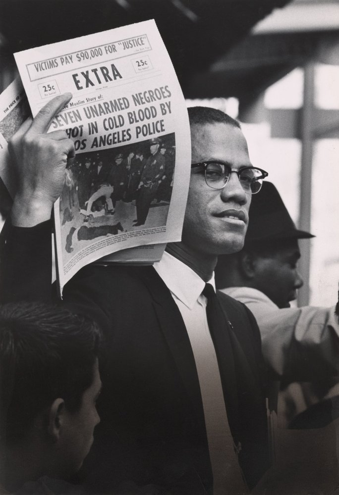

Malcolm X Holding up Black Muslim Newspaper, Los Angeles, California
Gordon Parks · 8 May 1963 · Gelatin silver print · 34.4 × 23.5 cm (image) · Art Institute of Chicago
In copyright. Look and learn: shown for study, not for download.
Gordon Parks was on assignment for Life, which had hired him in 1948 as its first African American staff photographer. The story was the Nation of Islam. Malcolm X, a friend, arranged the meeting with Elijah Muhammad at which Parks got permission to go ahead, and Parks then spent weeks with the community. This picture was taken in Los Angeles on 8 May 1963; the photo-essay ran in Life's issue of 31 May with an essay by Parks himself.